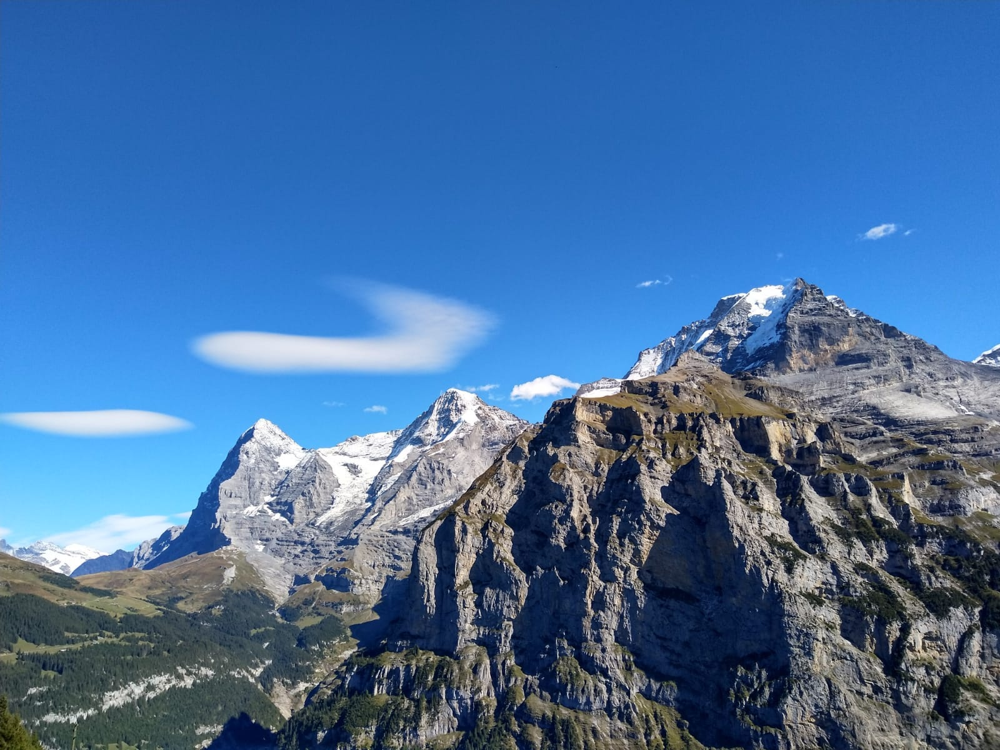
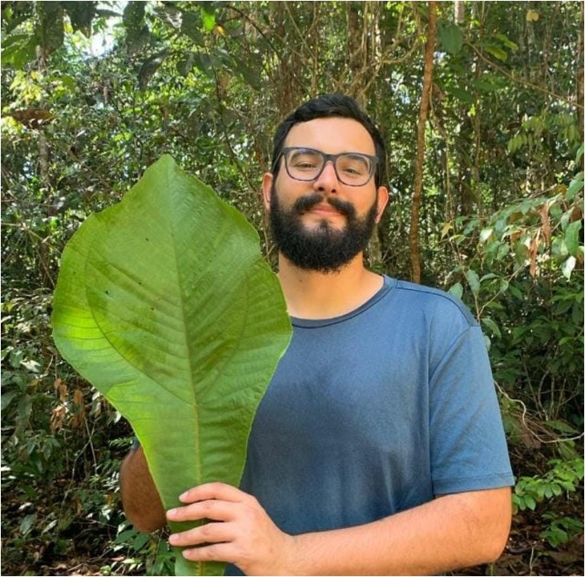

We model how species interaction networks and spatial networks form, move, and change — aiming to turn mechanistic, first-principles theory into forecasts for real biodiversity decisions.
Our models build up from individual traits and metabolism — body size, foraging, movement — to predict how populations, food webs, and whole landscapes work and respond to change. The same bioenergetic core scales from a single patch to a spatially explicit meta-food-web.
landscape → meta-food-web of patches → food web within a patch
Hi there! I'm Remo. I am an ecologist who fell in love with theory. I am currently an SNSF Ambizione junior group leader at the Institute of Plant Sciences at the University of Bern. From February 2027, I will start as Assistant Professor, building Network Ecology, a new division at the Institute of Ecology and Evolution.
During my undergraduate studies I conducted extensive fieldwork at night to understand how artificial light affects plant-pollinator networks. I quickly became fascinated by networks and their structure. Later, during an internship at the Natural History Museum, I worked on modelling phylogenetic trees from molecular and morphological data, and gathered my first experience with bioinformatic and computational tools.
I then moved to Leipzig for my PhD at iDiv, supervised by Uli Brose. There I extended a bioenergetic food-web model into space, incorporating spatially explicit landscapes of patches connected by species-specific dispersal. Using computer simulations, I explored how habitat isolation, patch size, and landscape heterogeneity drive the persistence of species and the stability of meta-food-webs. As a postdoc, I went on to study food-web assembly, spatial scales and processes, and artificial light at night.
What ties these questions together is a drive to understand the fundamental mechanisms that govern biodiversity and ecological processes — and to make that understanding useful for real decisions about a changing world.
Despite my love for theory, I remain an ecologist at heart and am endlessly fascinated by nature — astronomy and physics included. Nothing makes me feel freer than swimming in a river, hiking, or skiing in the mountains.


Investigating the context-dependency of biodiversity-ecosystem functioning (BEF) relationships, focusing on how the structure of multi-trophic networks and eutrophication shape these relationships. Combines empirical data from grassland experiments (PaNDiv) with bioenergetic food-web modelling to identify the mechanisms driving BEF variability, including trait-based plant-herbivore interaction networks and their response to nutrient enrichment.
BEFmulti-trophic networkseutrophicationInterested in joining as an MSc or BSc student? Get in touch via the contact section below.
How does biodiversity–ecosystem functioning (BEF) depend on multi-trophic interactions, eutrophication, and spatial processes? We combine empirical data from a large grassland experiment (PaNDiv) and alpine grasslands with bioenergetic food-web modelling to uncover the mechanisms behind BEF relationships, including trait-based plant-herbivore network structure, the interaction between food-web structure and nutrient availability, the role of space and movement, and how findings scale from experimental plots to real landscapes.
Movement drives species interactions, community composition, and biodiversity patterns across scales — but the geographic scale of biodiversity research rarely matches the scale at which animals actually move. We are developing an empirically informed, unified concept of spatial scale and a mechanistic dispersal model grounded in energy budgets and metabolism, alongside a general movement database.
Fieldwork on how artificial light impairs plant-pollinator networks, followed by the EcoLux experiment on the iDiv EcoTron platform, measuring ecosystem-wide effects from soil microbes to plants and invertebrates. This work led to a thematic session at BES 2021 and a co-edited theme issue, "Light pollution in complex ecological systems," in Philosophical Transactions of the Royal Society B.
During my PhD, I extended the allometric trophic network (ATN) model into a spatially explicit meta-food-web by coupling local food-web dynamics across patches through dispersal — including a mechanistic explanation of how habitat heterogeneity fosters biodiversity through the rescue effect and its counterpart, the "drainage effect."